Founded in 2012, LedZepNews is the leading unofficial and independent source of news about Led Zeppelin. For more than a decade, it has broken major stories about the band and its members and published longform investigative journalism.
Its journalism has been referred to in The Wall Street Journal, Rolling Stone, The Los Angeles Times, The Telegraph, The Daily Mirror, The Verge, NME and Classic Rock Magazine. The site has been viewed more than 8 million times since 2017, and the LedZepNews Substack is one of the most popular music newsletters on the platform.
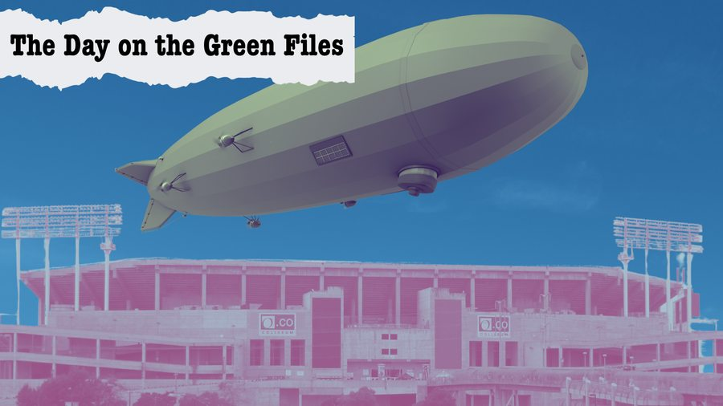
The Day on the Green Files: Unseen documents reveal the full impact of Led Zeppelin's 1977 backstage violence
Read →Exclusive: NYPD files on robbery of $180,000 from Led Zeppelin revealed after 50 years
Read →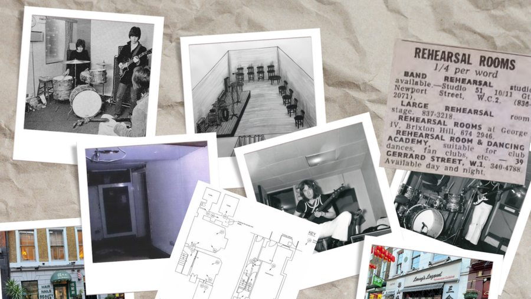
The mystery of where Led Zeppelin first rehearsed together has been solved after 56 years
Read →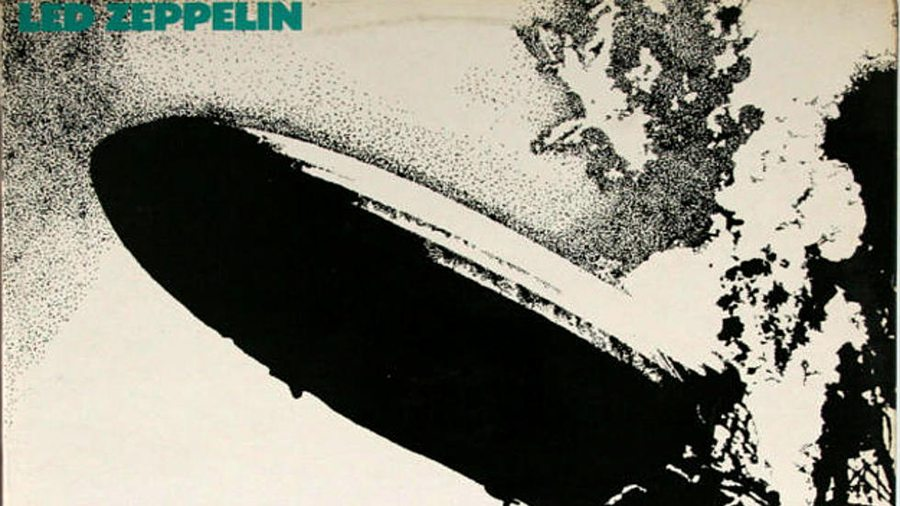
Revealed: Led Zeppelin's full 1968 recording contract
Read →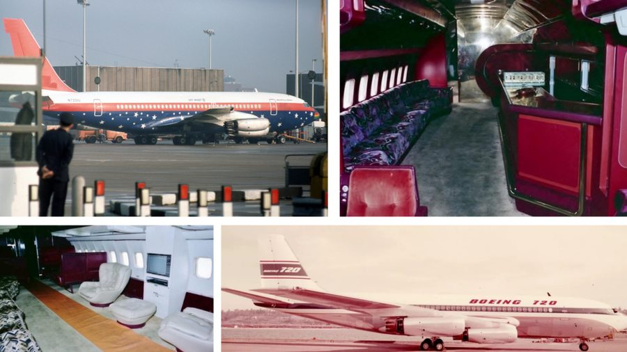
The complete history of The Starship, the Boeing 720 plane used by Led Zeppelin, The Rolling Stones, Elton John and more
Read →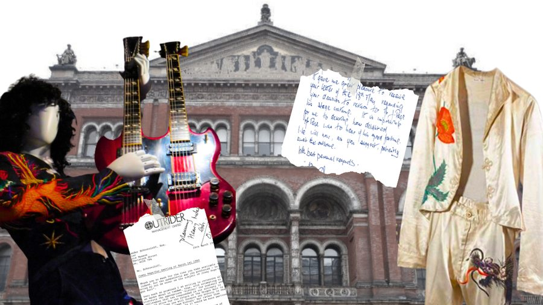
Revealed: Jimmy Page's secret 18-year battle to reclaim his most iconic stage outfits
Read →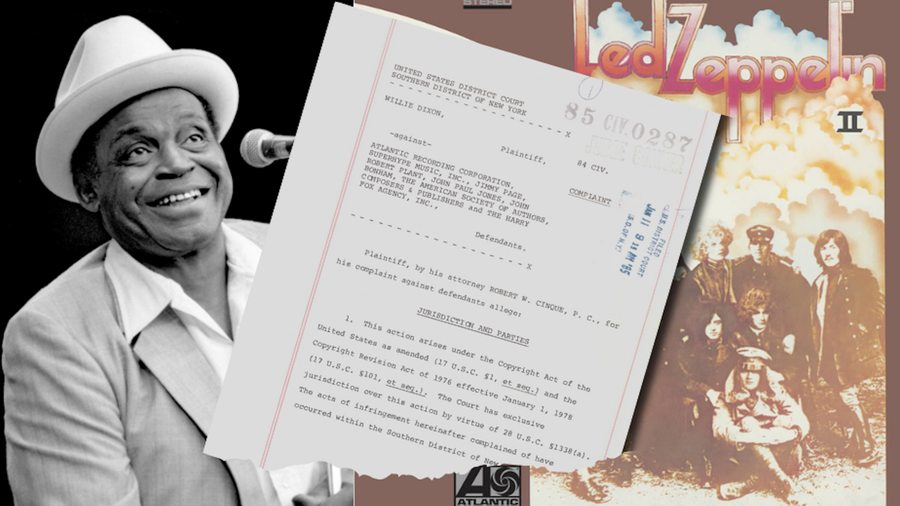
The previously untold history of Willie Dixon's legal battle with Led Zeppelin over 'Whole Lotta Love'
Read →The history of Jimmy Page's Equinox occult bookshop
Read →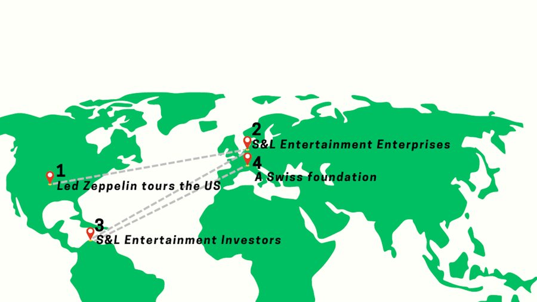
The intricate global network of companies behind Led Zeppelin's 1977 US tour
Read →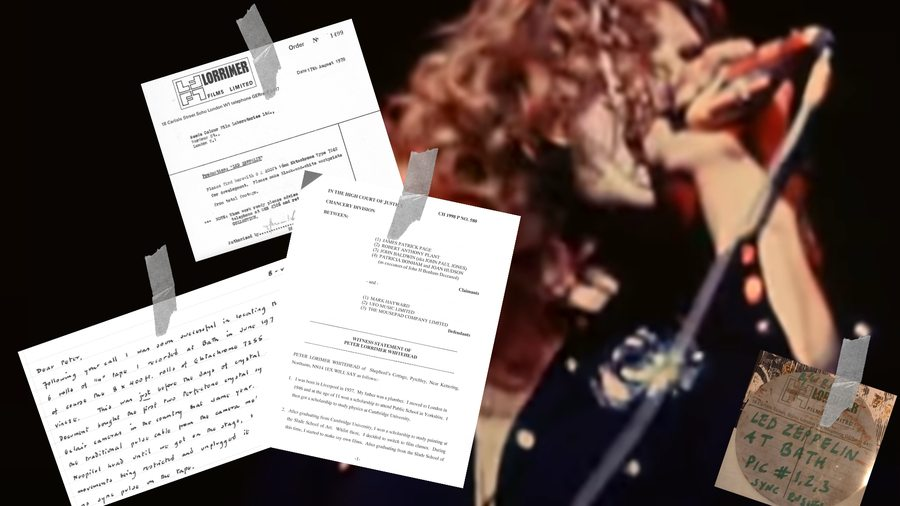
Inside Peter Whitehead's filming of Led Zeppelin in 1970 and the 52-year journey to its release
Read →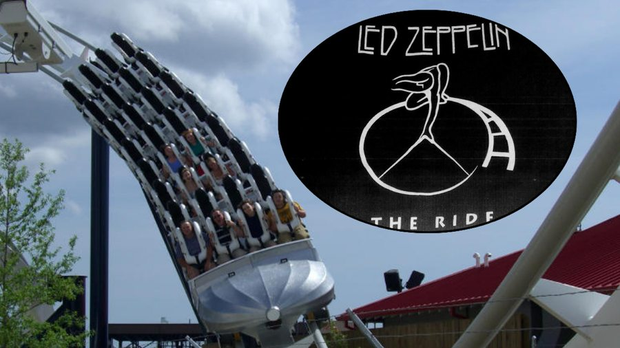
The bizarre history of Led Zeppelin's official rollercoaster and the doomed Hard Rock Park
Read →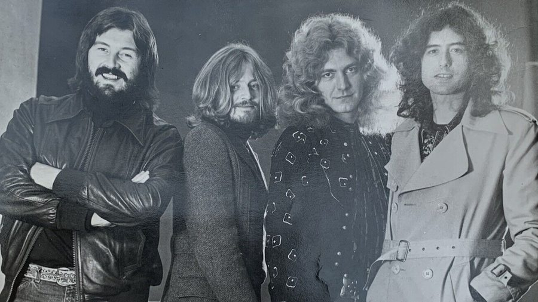
The Rossminster Affair: How Led Zeppelin tried to use a Shakespearean theatre charity to avoid paying tax
Read →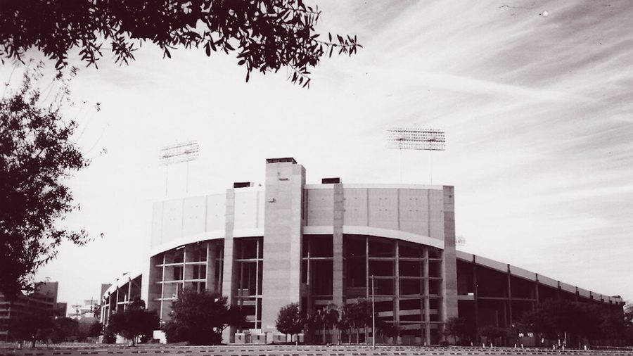
How a rainstorm transformed Led Zeppelin's Tampa 1977 show into a riot
Read →